Разряды и значение цифр
-
Разряды
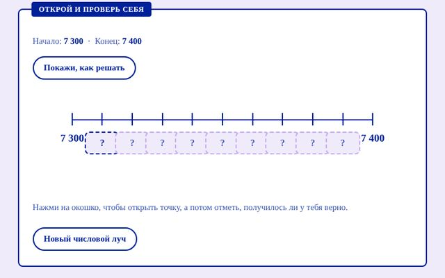
Детектив числового луча
Найди пропущенные подписи на числовом луче: найди разность, раздели на число промежутков и подпиши деления.
-
Разряды
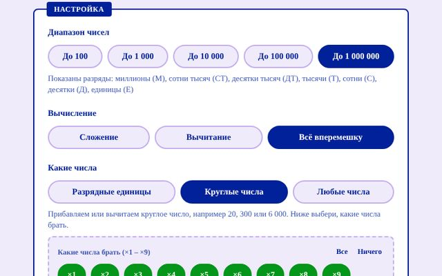
Разряды: тренажёр
Смотри на фишки в таблице разрядов и успей за время решить примеры на сложение и вычитание.
-
Разряды
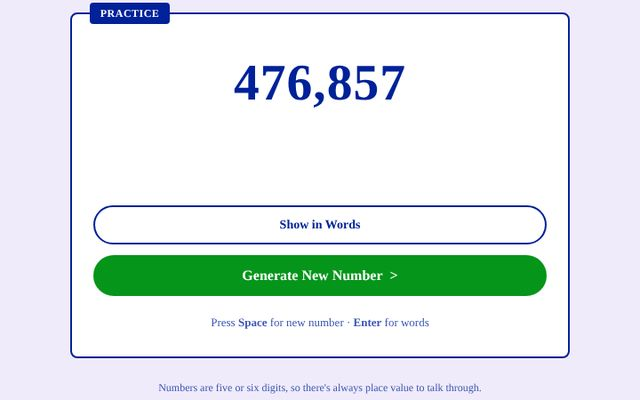
Числа словами (English)
Тренируйся читать большие числа вслух, а потом проверь, как они записываются словами. Здесь числа нужно записывать АНГЛИЙСКИМИ словами, поэтому этот тренажёр на английском языке.
-
Разряды
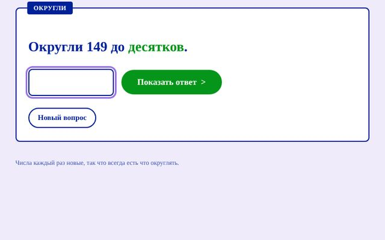
Округление: тренажёр
Округляй числа до десятков, сотен или тысяч, а потом смотри, как числовой луч показывает, почему ответ именно такой.
-
Разряды
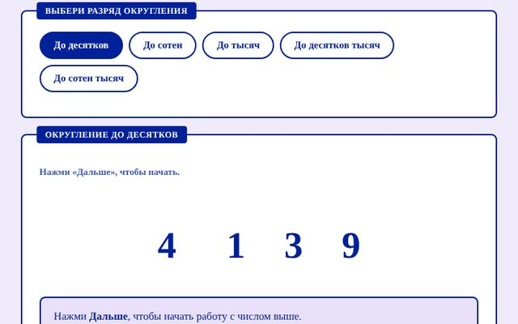
Округление шаг за шагом
Обучающий помощник: он шаг за шагом показывает способ «обведи – подчеркни – измени – замени нулями» для округления любого числа.
Сложение и вычитание
-
Сложение, вычитание
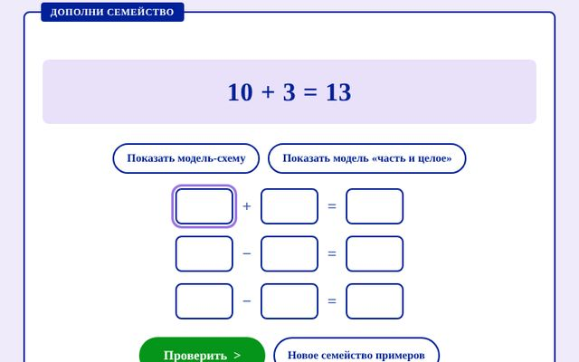
Семейства примеров
Дан один пример. Найди остальные три примера из той же семьи — на сложение и вычитание или на умножение и деление.
-
Сложение, вычитание
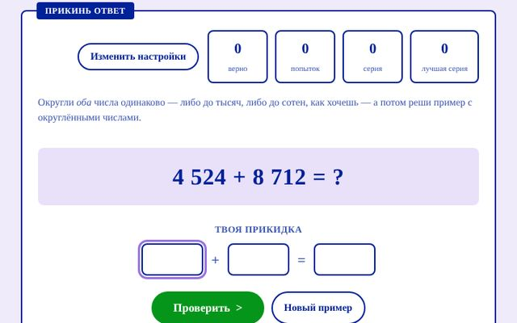
Прикидка с помощью округления
Округли оба числа в примере на сложение или вычитание до тысяч или до сотен, а потом прикинь ответ по округлённым числам.
-
Сложение, вычитание
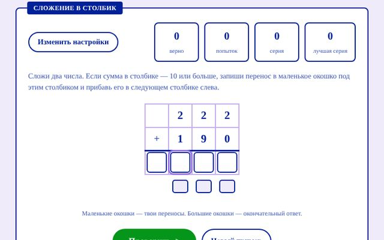
Сложение и вычитание в столбик
Реши пример в сетке для столбика: сам впиши переносы или обмены, а потом введи окончательный ответ.
-
Сложение, вычитание
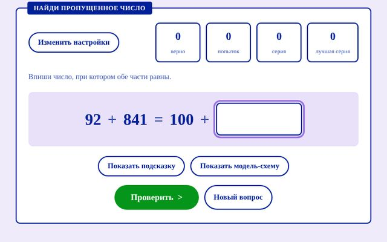
Пропущенные числа
Найди пропущенное число в паре равных примеров: заметь, как одно число изменилось, чтобы получилось другое.
Умножение и деление
-
Умножение, деление
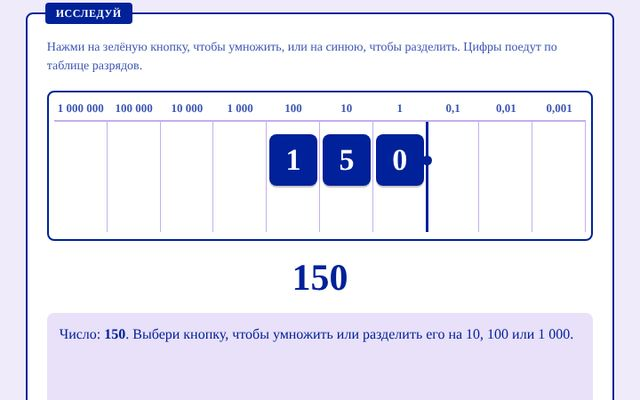
Умножение и деление на 10, 100, 1 000
Смотри, как цифры сдвигаются по таблице разрядов при умножении и делении на 10, 100 или 1 000, а потом потренируйся.
-
Умножение, деление
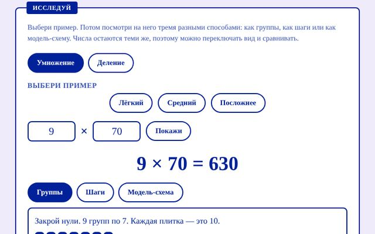
Умножение и деление на круглые числа (кратные 10)
Смотри на 6 × 800 или 3 500 : 700 как на группы, шаги и модель-схему, а потом потренируйся.
-
Умножение, деление
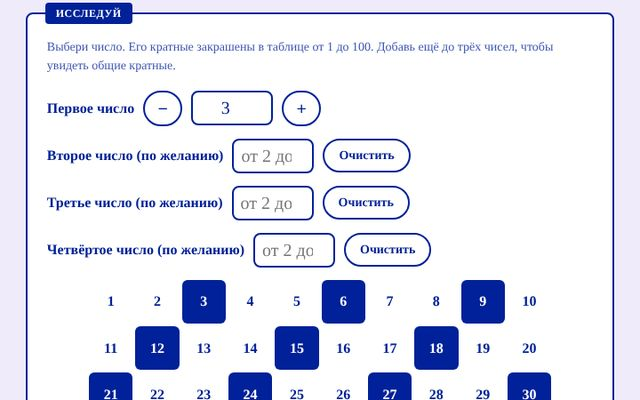
Кратные и общие кратные
Исследуй кратные на таблице от 1 до 100, а потом тренируйся находить кратные, общие кратные и наименьшее общее кратное (НОК).
-
Умножение, деление
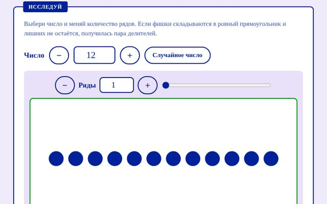
Делители и общие делители
Найди делители числа с помощью фишек, а потом тренируйся записывать делители и общие делители.
-
Умножение, деление
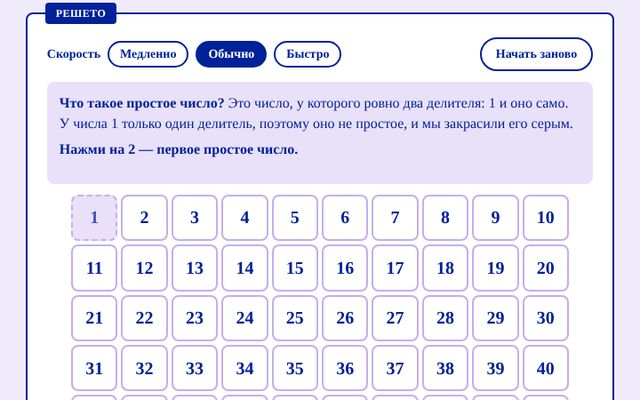
Простые числа
Посмотри, как решето Эратосфена находит простые числа до 100, а потом учись отличать простые числа от составных.
-
Умножение, деление
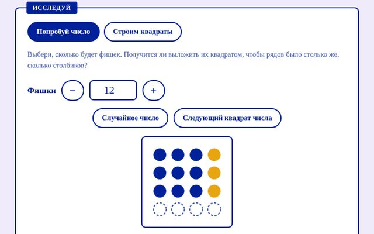
Квадраты чисел
С помощью фишек пойми, почему квадраты чисел так называются, а потом потренируйся со степенью и записью в квадрате.
-
Умножение, деление
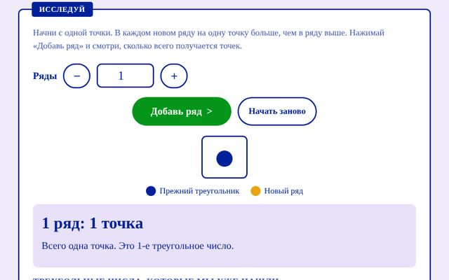
Треугольные числа
Строй треугольники ряд за рядом, пойми, откуда берутся треугольные числа, а потом потренируйся находить следующее.
Дроби
-
Дроби
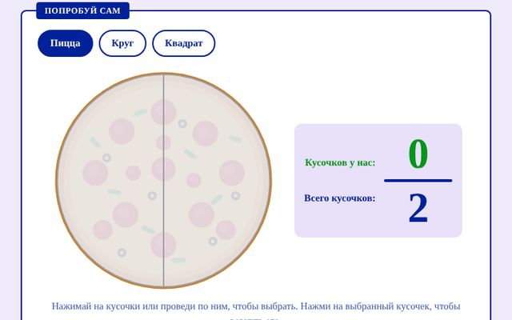
Дроби: кусочки
Разрежь пиццу, круг или квадрат на равные кусочки, выбери несколько и посмотри на дробь в цифрах и словами.
-
Дроби
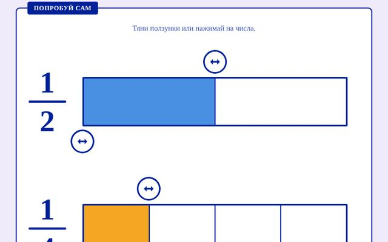
Дроби: равные полоски
Меняй верхнее и нижнее число у двух полосок-дробей. Когда полоски показывают одно и то же количество, они становятся зелёными.
-
Дроби
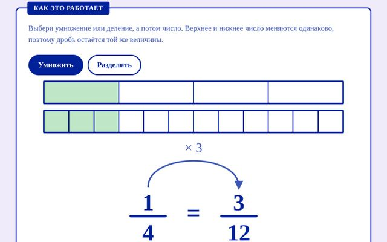
Поиск равных дробей
Узнай, почему верхнее и нижнее число нужно умножать или делить на одно и то же число, а потом найди пропущенное число.
-
Дроби
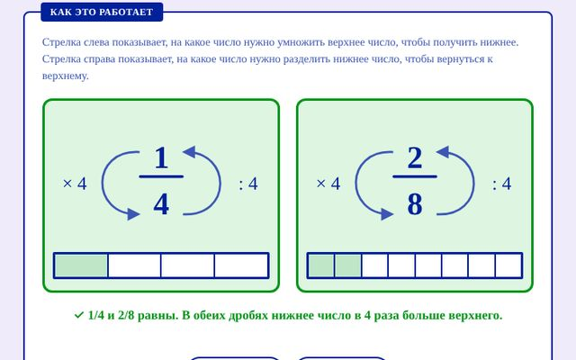
Дроби: метод отношения
Загляни внутрь дроби и узнай, сколько раз верхнее число помещается в нижнем. Дроби с одинаковым отношением равны.
-
Дроби
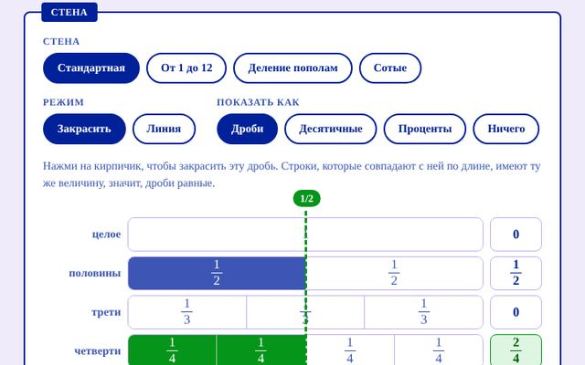
Стена дробей
Закрась дробь на стене и посмотри на все строки, которые с ней совпадают. Води линию по стене, чтобы найти равные дроби.
-
Дроби
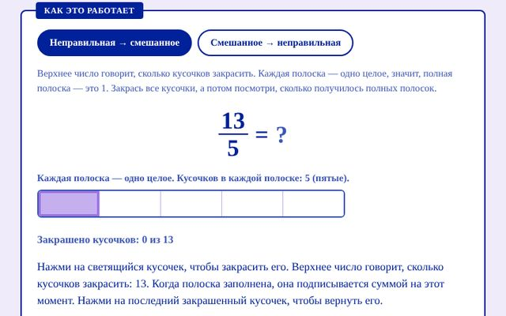
Смешанные и неправильные дроби
Закрашивай кусочки в полосках и превращай неправильные дроби в смешанные числа и наоборот.
-
Новое Дроби
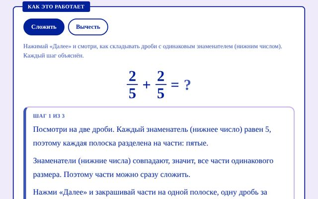
Сложение и вычитание дробей
Закрашивай кусочки на полоске и складывай и вычитай дроби с одинаковым знаменателем.
-
Новое Дроби
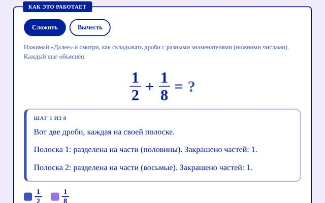
Дроби с разными знаменателями
Раздели дроби на равные части так, чтобы нижние числа совпали, а потом сложи или вычти их.
-
Новое Дроби
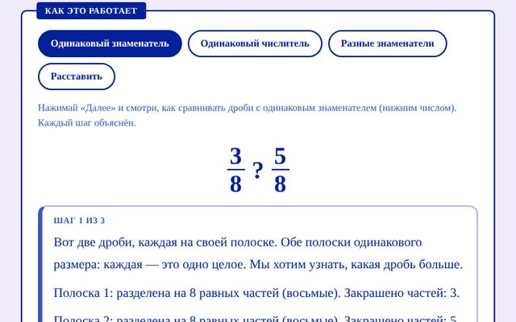
Сравнение и расстановка дробей
Узнай, какая дробь больше, и расставь дроби по порядку с помощью полосок, разделённых на равные части.
Математические навыки
-
Навыки
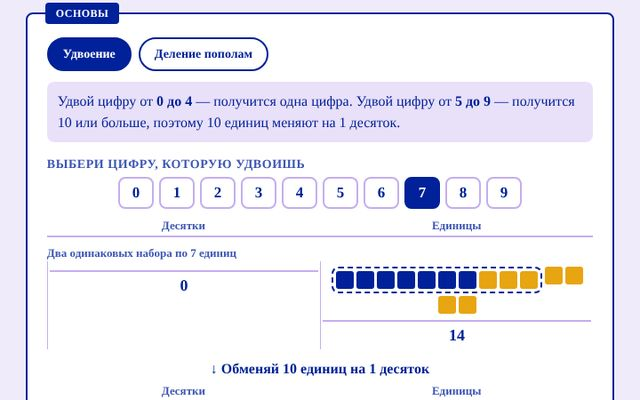
Удвоение и деление пополам
Смотри, как удваиваются и делятся пополам числа с помощью блоков разрядов, включая обмен 10 единиц на 1 десяток, шаг за шагом. Потом тренируйся на шести уровнях.
Ничего не найдено. Попробуй другое слово.